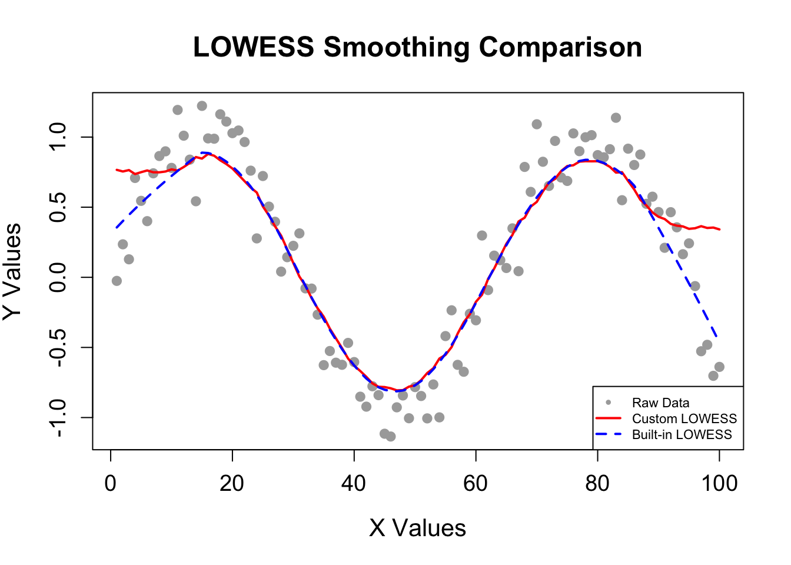

set.seed(1)
errors <- rnorm(100, mean = 0 , sd = 0.2)
x <- (1:100)
y <- integer(100)
y_function <- function(a, b){
# A function that generates all the "y" values
#
# Input:
# a - the "x" input value
# b - the "error term" associated with that value
#
# Output:
# y value
return(sin(a/10)+b)
}
for (i in 1:100) {
y[i] <- y_function(x[i], errors[i])
}
write.csv(x, file = "_raw_data/Prac2_xvalues.csv") #saving our x
write.csv(y, file = "_raw_data/Prac2_yvalues.csv") #saving our y
write.csv(errors, file = "_raw_data/Prac2_error_values.csv") #saving our errorsPractical 2
Question 1:
Generating simulated data
Question 2:
Building my own Lowess function
pairwise_distance <- function(x) {
# Computes a matrix of absolute differences between x–values.
#
# Args:
# x: A numeric vector.
#
# Returns:
# A symmetric matrix D where D[i, j] = |x[i] - x[j]|.
n <- length(x)
D <- matrix(0, n, n) # Initialize an n x n matrix
for (i in 1:n) {
for (j in 1:n) {
D[i, j] <- abs(x[i] - x[j])
}
}
return(D)
}
find_k_nearest <- function(i, D, k) {
# Finds the indices of the k nearest neighbors (excluding the point itself)
# for the i-th observation based on the distance matrix D.
#
# Args:
# i: Index of the target observation.
# D: An n x n distance matrix (typically from pairwise_distance).
# k: The number of neighbors to select.
#
# Returns:
# A vector of indices corresponding to the k nearest neighbors of x[i].
row_distances <- D[i, ]
# Order indices in increasing order of distance
ordered_indices <- order(row_distances)
# The first index is i itself (distance = 0), so we take the next k indices.
nearest_indices <- ordered_indices[2:(k + 1)]
return(nearest_indices)
}
customLowess <- function(x, y, f) {
# Performs LOWESS smoothing on (x, y) data using a fixed fraction f of neighbors.
#
# Args:
# x: Numeric vector of independent variable values.
# y: Numeric vector of dependent variable values.
# f: Fraction (span) of points to use for local regression (default is 0.3).
#
# Returns:
# A data frame with the original x values and the corresponding smoothed (fitted) y values.
n <- length(x)
k <- ceiling(f * n) # Determine the number of neighbors based on fraction f
# Compute the pairwise distance matrix for x-values only.
D <- pairwise_distance(x)
# Initialize vector to hold the fitted (smoothed) y values.
fitted <- numeric(n)
# Loop over each data point to compute its LOWESS estimate.
for (i in 1:n) {
# Obtain the indices of the k nearest neighbors (excluding x[i] itself)
neighbors <- find_k_nearest(i, D, k)
# Determine the bandwidth h as the maximum distance among these neighbors.
h <- max(D[i, neighbors])
# Compute tricube weights for these neighbors:
# w[j] = (1 - (|x[i]-x[j]| / h)^3)^3 for each neighbor j.
weights <- numeric(length(neighbors))
for (j in seq_along(neighbors)) {
dist_ij <- D[i, neighbors[j]]
weights[j] <- (1 - (dist_ij / h)^3)^3
}
# Normalize weights so that they sum to 1.
weights <- weights / sum(weights)
# Compute the weighted average of y using the selected neighbors.
fitted[i] <- sum(weights * y[neighbors])
}
# Return the results as a data frame.
result <- data.frame(x = x, fitted = fitted)
return(result)
}Question 3:
Comparing R’s built in Lowess Function to the “customLowess Function” and plotting both the smoothing values for comparison
# Custom LOWESS (your user-defined function; ensure it is in your workspace)
result1 <- customLowess(x, y, f = 0.3)
# Built-in lowess from R (note: iter = 0 means no robust iterations)
result2 <- lowess(x, y, f = 0.3, iter = 0)
write.csv(result1, file = "_raw_data/customLowess_values.csv") #saving our x
write.csv(result2, file = "_raw_data/Lowess_values.csv") #saving our y